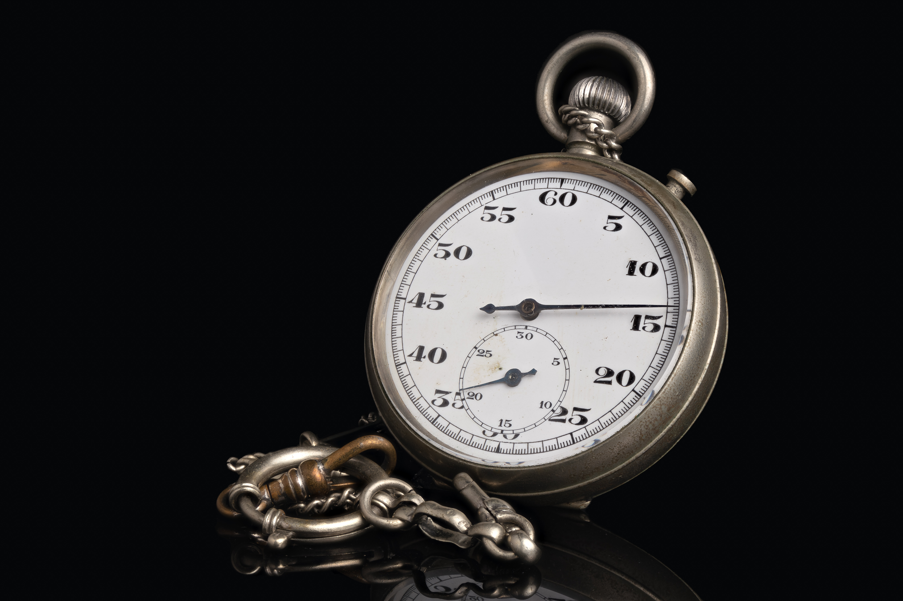

Timer
A timer is a clock that counts down for a certain amount of seconds, minutes and or hours. The countdown is always done per second. So what can we use a timer for? A timer is very useful for each task that needs to be completed in a certain timeframe.

StopWatch
Wondering what a stopwatch is? A stopwatch is a handheld timepiece designed to gauge the span of time which elapses between its activation and deactivation. In manual stopwatch time, the watch is started and stopped by a user pressing a button.